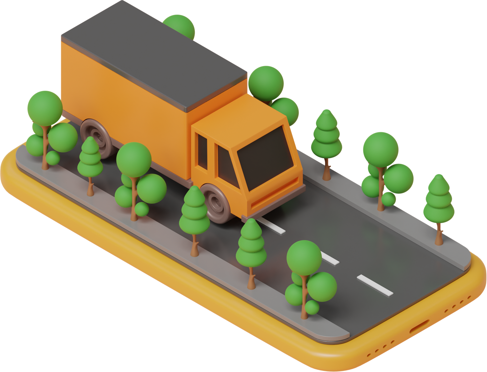

-
Every year 4 lakh new trucks getting into the logistics market seeking
for parking space. The estimated value of the goods carried by the
trucks on Indian roads is $ 200Bn. Over 57,000 truck crashes and
15,000 drivers are killed on road accidents every year. Truck drivers
often have to try several lots before they can find somewhere to park.
The result is frustration, fatigue, improper sleep, robbery,
insecurity over vehicle protection.
-
Halt-O truck parking ecosystem reduces truck drivers’ job-related
risks in several ways. It not only makes finding a parking space easy,
but also dissuade robbers from stealing the freight.
-
Interconnected system of resources and services available for truck
drivers to park their vehicles during long trips. This ecosystem
includes truck stops, rest areas, private parking lots, and other
parking facilities, as well as the technologies and services that
support them, such as truck parking reservation systems, parking
information management systems, and parking space prediction systems.
-
Interconnected system of resources and services available for truck
drivers to park their vehicles during long trips. This ecosystem includes
truck stops, rest areas, private parking lots, and other parking
facilities, as well as the technologies and services that support them,
such as truck parking reservation systems, parking information management
systems, and parking space prediction systems.
-
One major challenge in the truck parking ecosystem is the shortage of safe
and convenient parking options for truck drivers, which can lead to
truckers parking on the side of the road, causing hazards for other
drivers. To address this issue, Halt-O is offering advanced amenities such
as showers, fuel, and food services, to improve the overall trucking
experience.
-
Additionally, the development of new technologies, such as real-time
parking availability information systems, parking reservation systems, and
predictive parking algorithms, to truckers/drivers to more efficiently
plan their trips and find suitable parking options along the way. Also
improving the overall management and utilization of truck parking
resources, reducing congestion and improving safety for everyone on the
road.
-
Overall, the truck parking ecosystem is constantly evolving, driven by the
need to meet the increasing demands of the trucking industry and improve
the safety and convenience of truck drivers on the road.